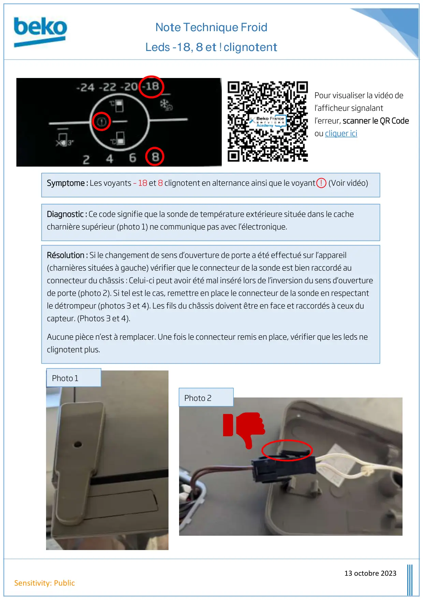
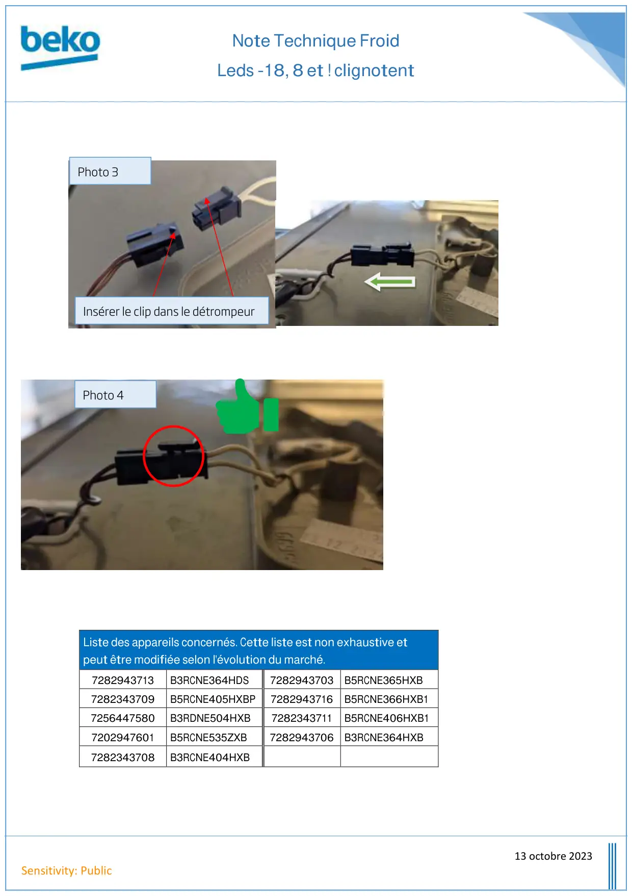

Note Technique Froid Voyants -18 8 et ! clignotent

Note Technique FroidLeds -18, 8 et ! clignotent13 octobre 2023Sensitivity: PublicDiagnostic : Ce code signifie que la sonde de température extérieure située dans le cachecharnière supérieur (photo 1) ne communique pas avec l’électronique.Résolution : Si le changement de sens d’ouverture de porte a été effectué sur l’appareil(charnières situées à gauche) vérifier que le connecteur de la sonde est bien raccordé auconnecteur du châssis : Celui-ci peut avoir été mal inséré lors de l’inversion du sens d’ouverturede porte (photo 2). Si tel est le cas, remettre en place le connecteur de la sonde en respectantle détrompeur (photos 3 et 4). Les fils du châssis doivent être en face et raccordés à ceux ducapteur. (Photos 3 et 4).Aucune pièce n’est à remplacer. Une fois le connecteur remis en place, vérifier que les leds neclignotent plus.Photo 1Photo 2Symptome : Les voyants – 18 et 8 clignotent en alternance ainsi que le voyant ! (Voir vidéo)Pour visualiser la vidéo del’afficheur signalantl’erreur, scanner le QR Codeou cliquer ici
1 / 2
Note Technique FroidLeds -18, 8 et ! clignotent13 octobre 2023Sensitivity: PublicListe des appareils concernés. Cette liste est non exhaustive etpeut être modifiée selon l'évolution du marché.7282943713B3RCNE364HDS7282943703 B5RCNE365HXB7282343709B5RCNE405HXBP7282943716B5RCNE366HXB17256447580B3RDNE504HXB7282343711B5RCNE406HXB17202947601B5RCNE535ZXB7282943706 B3RCNE364HXB7282343708B3RCNE404HXBPhoto 3Photo 4Insérer le clip dans le détrompeur
2 / 2